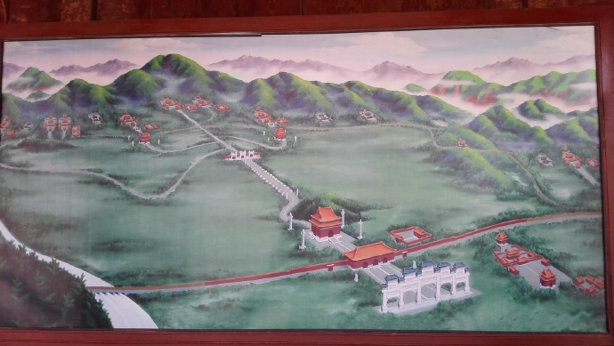
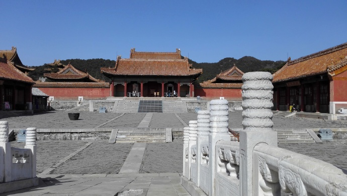
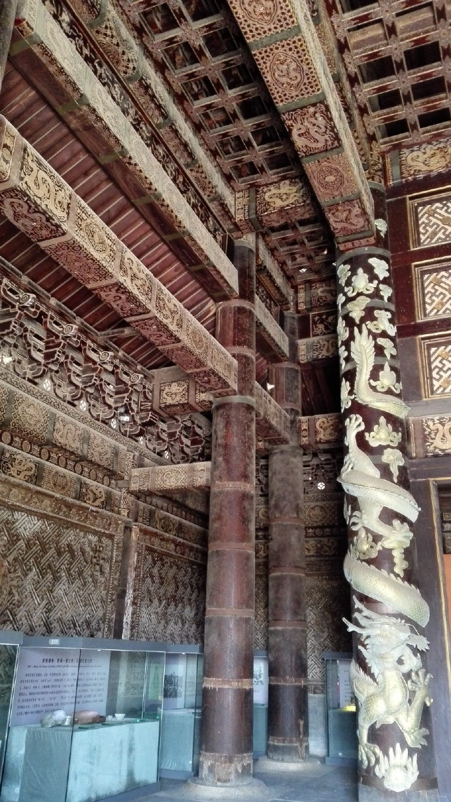
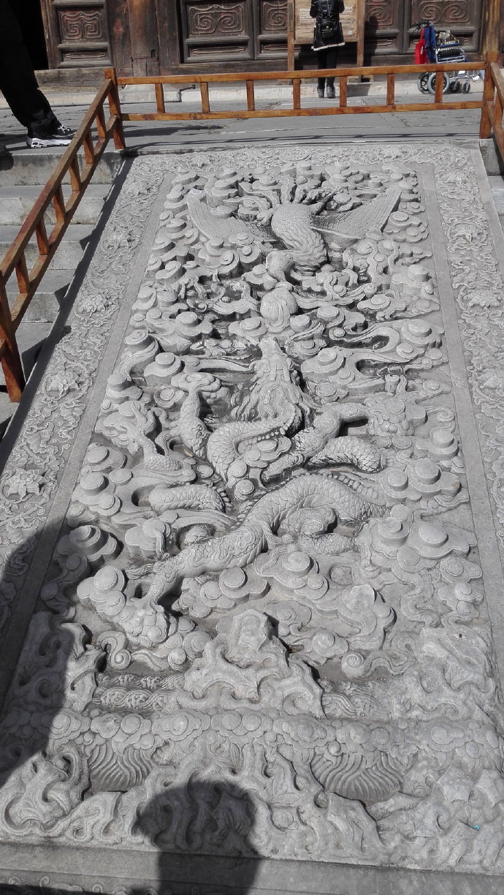
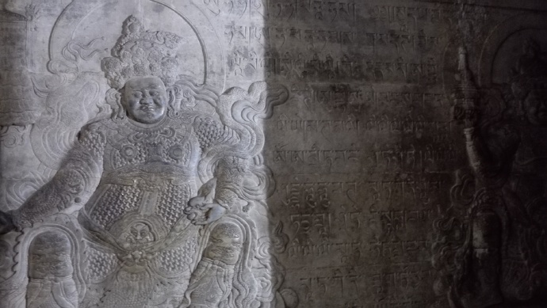
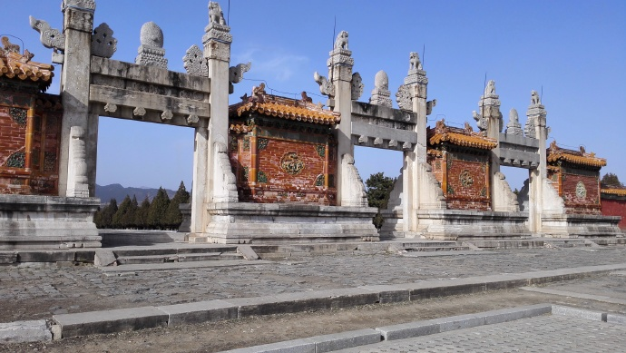
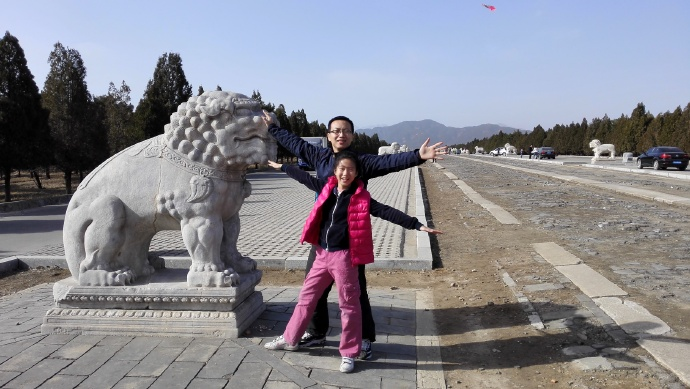

都说清东陵是金锁玉关的玄妙风水宝地，中华龙脉之首。这里葬着顺治、康熙、乾隆、咸丰、同治五座帝陵。东陵以顺治的孝陵为中心，每座陵园均由隆恩门、隆恩殿、配殿、方城明楼、宝顶等建筑构成，其中方城明楼为最高建筑物，内立石碑，明楼之后为宝顶即大坟头，宝顶下面就是停放灵柩的地宫。风水墙外还有孝庄皇后的昭西陵，可是为什么位于风水墙外也已经不得而知了。有人说是因为她曾下嫁多尔衮，也有人说她本应与皇太极合葬，但她舍不得离开自己的儿孙。
东陵中最值得一看的有慈禧的定东陵和乾隆的裕陵。慈禧陵寝的大殿装饰的金碧辉煌，精美绝伦，其豪华装修就是在皇宫大内也难以见到。大殿前的凤上龙下的汉白玉石雕也是绝无仅有的。



乾隆的裕陵中有精美的佛教石雕。除了各种图案，还有很多经咒，含义也已经不得而知了。慈禧和乾隆的墓都被盗过，墓中的石门都有明显的被炸毁的痕迹。

从东陵最南端的石牌坊到最北端的孝陵宝顶，由一条6公里长的宽阔神道相连。神道应该也是游览东陵不可不看的了。在神道上井然有序的分布着石像生、龙凤门、七孔桥等各种建筑。

